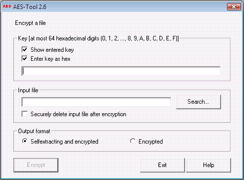

Included in the package CrypTool is the separate encryption utility AES-Tool. Using this tool it is possible to convert documents into self-extracting archives. These archives are encrypted using the AES algorithm (Rijndael) in CBC mode.
If this option is selected the main window of AES-Tool is opened.
The functionality of AES-Tool is divided into three areas:
AES-Tool is used to exchange encrypted data with other users. It does not contain functions for key management. The keys have to be exchanged between the users on a secure channel.
AES-Tool also can be used independently of CrypTool. AES-Tool is governed by the same terms of licence and the exclusion of any kind of liability as the CrypTool package.
Remark 1:
Documents encrypted using AES-Tool cannot be decrypted via the Encrypt/Decrypt \ Symmetric \ Rijndael menu. Accordingly, documents encrypted using CrypTool via the Encrypt/Decrypt \ Symmetric \ Rijndael menu cannot be decrypted with AES-Tool. That is because CrypTool and AES-Tool use different file formats: Files encrypted with AES-Tool may contain extra information in addition to the payload, i.e. the code for the embedded executable.
Remark 2:
When AES-Tool is started via the CrypTool menu option Encrypt/Decrypt \ AES (self extracting), the field Input file will be filled with a path of the following form: C:\TEMP\cry7.org (C:\TEMP results from the environment variable TEMP and another number can be displayed than 7). This file is a copy of the file currently opened in CrypTool. It contains all manual modifications to that file, even if they have not yet been saved.
Remark 3:
The Rijndael encryption algorithm works with a block length of 128 bits, and a variable key length e.g. 128, 192 and 256 bits. The input key will be filled with hex-zero characters up to the next minimal key length of 128, 196 resp. 256 bits.
Note that too short key lengths are considered as a security risk (see dialog Key Input).
Remark 4:
AES-Tool version 2.3 was successfully tested as standalone program with files up to 4 GB length.